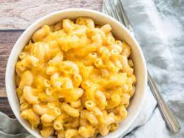

Mac and Cheese

The Best Mac and Cheese you will ever have!
This is my absolute favorite dish to make. It is easy and makes enough to last for a week (It heats up better than most casserols as well)!
Ingerdients Needed
- 16 oz Rotinni Noodles
- 1 lb Boneless Skinless Chicken Breast
- 1 lb Thick cut bacon strips
- 4 Cups of shredded cheese (I prefer the Kirkland Mexican blend)
- 1 Family sized can of Cream of Chickn Soup
- Zesty Itialian Salad Dressing
- Cool Ranch Doritos
See how simple the ingredients list is? Let's get to making your delicious meal!
Steps to make
- Preheat oven to 375 degrees F
- Preheat pan on the stove on meduim-high heat
- Start Boiling water for Rotinni Noodles
- Cut up all of the bacon and Chicken into one inch peices
- Place all of the bacon into the pan to cook until bacon is almost crispy
- Remove bacon from pan, and place in a bowl to be used later
- By this point your water should be boiling. Add your noodles to the boiling water.
- Add your Chicken to the pan in which you cooked the bacon, using the grease for flavoring
- Add Zesty Itialian Salad Dressing to the chicken pan
- Cook until chicken is golden brown, and the oil has started to dissapate from the pan
- Once both the chicken and noodles are done : grab a mixing bowl and put all of the chicken, 3/4 of the bacon, 2 Cups of cheese, the noodles, and your can of Cream of Chicken soup in and stir until everything is of similar texture.
- Place the mixture into your favorite Casserole Dish
- Place remaining bacon and cheese on top of the dish
- Put the dish in the oven and let it cook for 20 minutes total (15 on bake and then turn to broil to get the nice brazed top).
- Remove pan and serve!(Note : I like to crush up the Cool Ranch Doritos and stir it into mine once it is in my personal bowl. Adds an amazing crunch and unique flavor to it!)